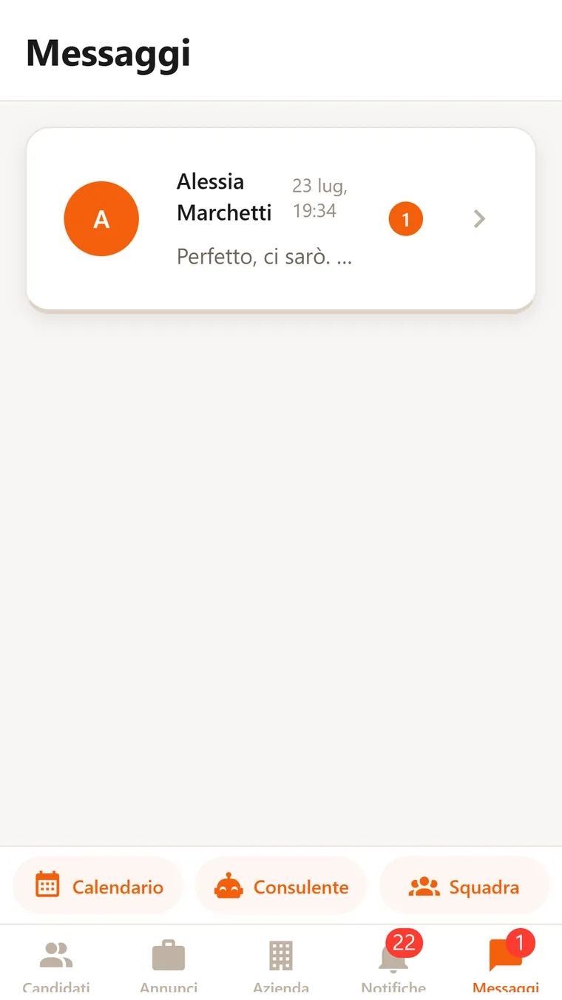

Profili per ruolo.
Il locale descrive tipo di locale, regione, lingue e affinità di squadra. Il professionista indica ruoli, aree, competenze, lingue e dove vuole lavorare. Dagli stessi campi nasce la percentuale di compatibilità.

Una percentuale, sei fattori.
Il confronto fra annuncio e profilo pesa sei fattori: aree, ruoli, competenze, tipo di locale, affinità di squadra, lingue. Turni e distanza non entrano. Nella vista normale il numero è lo stesso per il locale e per il professionista. Serve a scegliere chi incontrare: la decisione resta a chi fa il colloquio.

Annunci e candidature.
Il locale pubblica l'annuncio: retribuzione e contratto, ruolo, tipo di locale, lingue, affinità di squadra. Nel modulo la retribuzione è obbligatoria. Il professionista vede gli annunci ordinati per compatibilità. Le candidature arrivano ordinate dalla stessa percentuale e la chat parte da lì.

Chi lavora nel locale, con i numeri.
Le persone assunte con ruolo, turni degli ultimi 30 giorni, extra e valutazione di rendimento su quattro aspetti. Deleghe per singolo permesso: annunci, selezione, colloqui, esiti, squadra.

Turni, extra e posti scoperti.
Il locale dice quante persone servono per servizio; il calendario mostra turni ed extra insieme, segna chi manca e blocca le doppie prenotazioni. Il professionista ha il suo calendario con turni, disponibilità extra, impegni personali e promemoria. Gli scambi di turno fra colleghi passano dall'ok del locale.

Una sera scoperta, una richiesta.
Il locale pubblica la richiesta per giorno e ruolo. Il professionista segna i giorni liberi e vede chi cerca un extra in zona. L'accordo si chiude in chat.

Competenze una per una.
Il professionista elenca le competenze del suo ruolo. Per ciascuna può fare un quiz nell'app, preparato con l'IA, allegare un certificato o un documento. Il locale le vede sul profilo e contano nella compatibilità.

Due assistenti, uno per parte.
Il Consulente IA legge i dati del locale, annunci, candidature, squadra e turni, e risponde su tutto quello che riguarda la ristorazione. Il Coach IA legge il profilo e le candidature del professionista e risponde su lavoro e carriera. Tutti e due in chat, tutti e due in abbonamento, con un numero di richieste al mese.

Ci si parla nell'app.
Chat fra locale e professionista, con le note vocali. Notifiche per candidature, turni, extra e promemoria dell'agenda.
